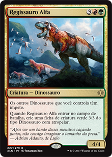
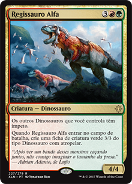

Finalmente os dinossauros ganharam uma tribo com o lançamento do bloco Ixalan. As principais cores que eles se encontram são verde, veremelho e branco (Naya), e escolhendo os melhores entre essas três cores, podemos fazer um grande estrago em quem ousar enfrentá-los.
A estratégia deles é bem simples: fazer um mana ramp colocando muitos terrenos em jogo, humanos no campo de batalha que reduzem o custo de mágicas de dinossauros, e faça com que lutem contra as criaturas inimigas, removendo-as com facilidade, pois muitos dos dinossauros tem um poder e resistência acima das outras criaturas do bloco. Além disso, vários dinossauros possuem uma habilidade poderosa chamada "Enfurecer", toda vez que eles sofrem dano (seja de combate ou não), acontece algo. Então vamos a estratégia do deck:


Essas cartas são a base do ramp do deck. Você poderá começar o jogo com a Convocadora de Kinjalli se tiver uma planície em campo, ou um Comungar com os Dinossauros caso esteja precisando de algum terreno de cor específica nos 5 primeiros cards do topo do grimório, ou então simplesmente pegar um dinossauro para sua mão. Caso você já esteja com uma mão boa e com os terrenos certos, guarde o Comungar com os Dinossauros para mais tarde, pode ser útil. O Mestre de Caça de Otepec assim como a Convocadora de Kinjalli, diminui mais ainda o custo de seus dinossauros e ainda pode dar ímpeto para algum dinossauro que entra em jogo, fazendo seu diferencial. Os Raptores Andarilhos é ROUBADO. Toda vez que Raptores Andarilhos leva dano, você procura por um card de terreno básico e coloca em jogo virado. Esse card é o PILAR do deck, pois você procura terreno da cor que você deseja/esteja precisando, e ainda pode ficar vivo após levar dano para procurar mais terrenos ainda.
 

Raptor Maxilácero é uma carta completamente insana para ser colocada antes mesmo do turno 4, pois você já deve ter pelo menos um humano que reduz o custo de mágicas de dinossauro em campo de batalha, e caso esteja com um Mestre de Caça de Otepec, ele já entra com ímpeto. Um 4/5 no terceiro turno é muito difícil de lidar, e seus oponentes vão pensar duas vezes em bloqueá-lo ou dar dano nele, pois cada dano que ele leva você compra um card. Além disso, se você deu sorte e já estiver com uma Convocadora de Kinjalli e um Mestre de Caça de Otepec em campo, seus dinossauros estarão custando 2 a menos, o que significa que você pode jogar um Regissauro Alfa! E o melhor de tudo é que ele provavelmente terá ímpeto devido ao Mestre de Caça de Otepec.


Se você conseguiu realizar qualquer um desses passos anteriores e seus dinossauros estiverem custando menos pra jogar, já procurou terrenos com os Raptores Andarilhos e já tem dinossauros em campo como o Raptor Maxilácero e Regissauro Alfa, agora é a hora de brincar:
O Tirano Armandíbula é uma carta muito forte, toda vez que ele leva dano você pode exilar uma criatura de um oponente, e caso o oponente não queira bloqueá-lo, levará 5 de dano. Além disso, temos fontes que fazem com que o próprio dono cause dano a ele, como por exemplo o Pisoteamento Selvagem e a Coroa de Tilonalli.
Etali, Tormenta Primordial é uma carta de gamble. Quando você ataca com ele, você poderá jogar algo de graça ou não, se der azar e puxar terreno. Porém só o fato de exilar uma carta do oponente e você poder usá-la sem custo de mana, já é algo poderoso. Além disso, ele é um 6/6.
Zetalpa não precisa de comentários, é apenas um dinossauro 4/8 indestrutível com golpe duplo, atropelar, vigilância e voar. Somente.
A opção mais poderosa do quarto turno adiante é o Ghalta. Se você já estiver com um Regissauro Alfa no campo de batalha, você provavelmente já pode jogar a Ghalta com ímpeto! Uma 12/12 no quinto turno atropelando é desesperador pros adversários, caso ela não seja anulada ou o oponente não tenha mágicas de remoção. Além disso, a planewsalker Samut, a Testada pode dar golpe duplo para dele. Fim de jogo.

Gishath, Avatar do Sol é um dos meus dinossauros preferidos. Apesar dele custar 8 de mana (1 de cada cor principal dos dinossauros) ele consegue entrar antes com a redução dos custos e terrenos disponíveis, além de que sua habilidade é convincente demais. Ele simplesmente já entra com ímpeto, atropelando, e ainda tem vigilância. Cada dano que passa direto no oponente, você vai revelando os cards do topo do grimório e sai colocando todos os dinossauros em jogo. Já coloquei com essa habilidade dele em um turno só um Ghalta e Zetalpa, somente. Além disso, se você possuir a planeswalker Samut, a Testada, você poderá dar golpe duplo para ele. Praticamente o jogo acaba depois disso.
Zacama é o dinossauro que custa mais mana do deck, é uma quantidade absurda. Porém com as reduções de custos e com os Raptores Andarilhos ajudando a procurar terreno, ela não fica tão difícil de ser jogada, e quando entra já faz um estrago. Assim que ela entra, todos os terrenos são desvirados e você já pode pagar os custos de manas das habilidades dele, inclusive podendo usar uma delas mais e uma vez no mesmo turno. É um grande finalizador de jogos, literalmente.
Nos planeswalkers, poderemos usar em decks de dinossauro a Huatli, Poetisa Guerreira que faz com que você ganhe muitos pontos de vida, já que os dinossauros tem muito poder/resistência. Além disso ela gera ficha de dinossauro 3/3 atropelando e o principal para mim: causa dano dividido da sua maneira a qualquer criatura no campo de batalha (incluindo as suas para causar enfurecer nos dinossauros), e elas não podem bloquear, abrindo passagem para um dano imenso dependendo dos dinossauros que estiverem no campo de batalha sobre seu controle.
Samut, a Testada vem do bloco anterior (Hora da Devastação do bloco Amonkhet) e ainda é válida no formato, e se torna bastante útil neste deck. Dar golpe duplo para seus dinossauros é uma ótima escolha, além da segunda habilidade que pode causar dano nas criaturas do oponente ou até mesmo nas suas, para ativar o enfurecer. A última habilidade dela também é fortíssima, você pode pegar duas criaturas de seu grimório e colocar em campo de batalha. Se um Regissauro Alfa já estiver em campo seria ótimo pegar um Ghalta e um Zacama, caso contrário pegue um Regissauro Alfa e outro dinossauro de sua escolha, e acabe com o oponente.
Por hoje é só, espero que tenham gostado do artigo e de suas estratégias. Se você gosta de criaturas gigantes, os dinossauros com certeza será sua escolha para o bloco de Ixalan. Qualquer sugestão ou crítica, favor clique em "Contato" no menu superior e nos envie uma mensagem.
a.